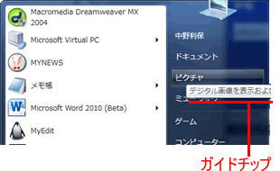

メニューの説明文音声ガイド MenuDescGuideW
void MenuDescGuideW( const wchar_t* aString ,DWORD aGuideId,BOOL aNextContinue );メニューの説明文文字列(ステータス情報、ガイドチップ等)を音声ガイドします。
|  |
引 数
| aString | 説明文 文字列 |
| aGuideId | 音声ガイドID(チェック/チェックなしなど,VGI_...:pctkvg.h) ※説明文文字列の音声ガイド後に、音声出力されます。 |
| aNextContinue | TRUE=次に音声ガイドが続く FALSE=この関数コールで音声出力する |
参照
| pctkvg.h |